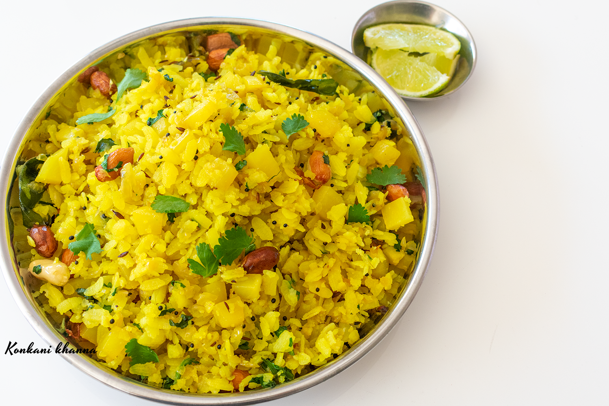

Kande Pohe

Description
Poha recipe is a popular Maharashtrian breakfast made from flattened rice, herbs and spices.
It is a staple breakfast in our home which we all love.In Marathi language,
the word “Kanda” means onions.
By now you know that the Maharashtrian word for flattened or beaten rice is Poha.
Hence the term Kanda Poha or Kanda Pohe.
In some variations of poha recipe, potato is added instead of onions.
Some people like to add both onions and potatoes.
I always add red onions that give a nice sweetish taste.
If you are not a fan of red onions, you can try making the recipe with white onions or
yellow onions.
Ingredients
- Poha-1cup
- Salt as required
- Sugar-tsp
- Lemon Juice-1tsp
- Peanuts-1/4th cup
- Oil-1tsp
- Mustard Seeds-1tsp
- Potatoes-Diced
- Curry Leaves
- Green Chillies-2
- Onions-1/2 cup chopped
- Turmeric Powder-1/2 tbsp
- Coriander Leaves-1tbsp
Steps
- Wash the poha with light hands, add some salt, sugar and lemon juice, mix it with light hands and rest it for 5 minutes.
- Dry roast the peanuts for 3-4 minutes.
- Heat oil in wok and add mustard seeds, add the raw potatoes and sauté until they are half cooked.
- Add curry leaves, green chillies, onions and sugar, mix all the ingredient and cook until the potatoes are cooked and onions are caramelized.
- Add the turmeric powder and sauté for a minute, add the soaked poha and squeeze some lemon juice, add some salt and the roasted peanuts.
- Cook the poha for 2-3 minutes. If the poha starts to get to dry sprinkle some water over it and mix again.
- Switch off the flame and cover for 2 minutes.
- Sprinkle some freshly chopped coriander leaves. You can also top it with few freshly grated coconuts and sev. Serve hot with a lemon wedge.